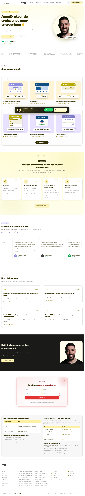

<!-- Preuve plein écran — fenêtre navigateur.
     Variante « source citée » : la capture est présentée dans une fenêtre dont la barre
     d'adresse porte la marque puis l'URL. À utiliser quand la preuve est une page
     publique et que l'adresse EST l'argument. Le chrome de la fenêtre reste à la
     charte : pas de gris système, pas de pastilles rouge/orange/vert.
     La page défile franchement pendant le plan — c'est ce qui prouve qu'elle existe
     vraiment. Régénérer la capture avec tools/snap-site.mjs.
     Remplacer l'image, l'URL et les deux lignes de texte. -->
<template id="preuve-plein-navigateur-template">
  <div data-hf-id="hf-pb00" id="preuve-plein-navigateur-root" data-composition-id="preuve-plein-navigateur" data-width="1080" data-height="1920">
    <style>
      @font-face{font-family:'Clash Grotesk MEG';src:url('assets/ClashGrotesk-Variable.woff2') format('woff2');font-weight:200 700;font-style:normal;font-display:block}
      #preuve-plein-navigateur-root{position:relative;width:100%;height:100%;overflow:hidden;box-sizing:border-box;padding:120px 50px 104px;display:flex;flex-direction:column;align-items:center;background:linear-gradient(152deg,#3B3B3B 0%,#2F2C00 58%,#1F1D00 100%);color:#FFFEEC;font-family:'Clash Grotesk MEG',sans-serif}
      /* Halo or sur fond sombre : la fenêtre semble éclairée par le haut. */
      #preuve-plein-navigateur-root .halo{position:absolute;left:50%;top:-220px;width:1400px;height:1100px;transform:translateX(-50%);background:radial-gradient(50% 50% at 50% 50%,rgba(185,170,2,.34) 0%,rgba(185,170,2,0) 70%);pointer-events:none}
      #preuve-plein-navigateur-root .titre{position:relative;text-align:center;font-size:74px;line-height:.94;font-weight:700;letter-spacing:-.028em;word-spacing:.05em;opacity:0}
      #preuve-plein-navigateur-root .fenetre{position:relative;margin-top:52px;width:980px;height:1360px;box-sizing:border-box;border-radius:38px;overflow:hidden;background:#FFFEEC;box-shadow:0 56px 118px rgba(0,0,0,.52);opacity:0}
      #preuve-plein-navigateur-root .barre{display:flex;align-items:center;gap:16px;height:112px;padding:0 28px;background:#FFFCD6;border-bottom:2px solid rgba(47,44,0,.10)}
      #preuve-plein-navigateur-root .pastille{width:18px;height:18px;border-radius:50%;background:rgba(47,44,0,.18)}
      #preuve-plein-navigateur-root .url{flex:1;display:flex;align-items:center;gap:16px;margin-left:10px;padding:14px 26px;border-radius:999px;background:#FFFEEC;color:#2F2C00;font-size:33px;font-weight:600;white-space:nowrap;overflow:hidden}
      /* Favicon : la marque MEG, posée telle quelle sur la gélule crème. Pas de
         masque CSS : chrome-headless-shell ne le rend pas au moment de la capture. */
      #preuve-plein-navigateur-root .marque{display:block;width:62px;height:auto;flex:none}
      #preuve-plein-navigateur-root .sep{width:2px;height:30px;flex:none;border-radius:2px;background:rgba(185,170,2,.55)}
      /* Cadenas tracé : un glyphe emoji dépendrait de la police de la machine. */
      #preuve-plein-navigateur-root .url svg{width:30px;height:30px;flex:none;margin-left:auto;fill:none;stroke:#B9AA02;stroke-width:1.9;stroke-linecap:round;stroke-linejoin:round}
      /* Hublot : la page fait près de 6000 px de haut, seul son haut tient dans la
         fenêtre et c'est lui qui glisse. */
      #preuve-plein-navigateur-root .vue{height:1248px;overflow:hidden}
      #preuve-plein-navigateur-root .vue img{display:block;width:100%;height:auto}
      #preuve-plein-navigateur-root .source{position:relative;margin-top:auto;padding:15px 32px;border-radius:999px;background:#B9AA02;color:#2F2C00;font-size:31px;font-weight:700;letter-spacing:.10em;opacity:0}
    </style>
    <div data-hf-id="hf-pb01" class="halo"></div>
    <div data-hf-id="hf-pb02" class="titre">Allez vérifier<br data-hf-id="hf-pb03">vous-même.</div>
    <div data-hf-id="hf-pb04" class="fenetre">
      <div data-hf-id="hf-pb05" class="barre">
        <span data-hf-id="hf-pb06" class="pastille"></span><span data-hf-id="hf-pb07" class="pastille"></span><span data-hf-id="hf-pb08" class="pastille"></span>
        <span data-hf-id="hf-pb09" class="url"><span data-hf-id="hf-pb11" class="sep"></span>megbusiness360.com<svg data-hf-id="hf-pb0a" viewBox="0 0 24 24" aria-hidden="true"><rect data-hf-id="hf-pb0e" x="4.5" y="10.5" width="15" height="10.5" rx="2.5"/><path data-hf-id="hf-pb0f" d="M8 10.5V7.5a4 4 0 0 1 8 0v3"/></svg></span>
      </div>
      <div data-hf-id="hf-pb0b" class="vue"></div>
    </div>
    <div data-hf-id="hf-pb0d" class="source">PAGE PUBLIQUE</div>
    <script>
      window.__timelines=window.__timelines||{};
      const pbr=gsap.timeline({paused:true});
      pbr.fromTo('#preuve-plein-navigateur-root .titre',{y:-24,opacity:0},{y:0,opacity:1,duration:.34,ease:'power3.out'},.05)
         .fromTo('#preuve-plein-navigateur-root .fenetre',{y:70,scale:.95,opacity:0},{y:0,scale:1,opacity:1,duration:.56,ease:'power3.out'},.18)
         /* La page défile pour de bon : on traverse un écran et demi en 3,6 s. */
         .fromTo('#preuve-plein-navigateur-root .vue img',{y:0},{y:-1560,duration:3.6,ease:'power1.inOut'},.70)
         .fromTo('#preuve-plein-navigateur-root .source',{y:16,opacity:0},{y:0,opacity:1,duration:.28,ease:'power3.out'},.60);
      window.__timelines['preuve-plein-navigateur']=pbr;
    </script>
  </div>
</template>
